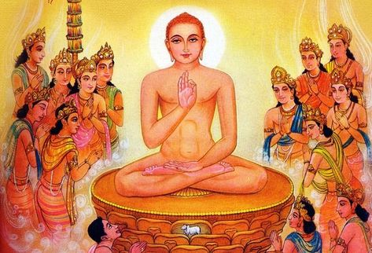

WELCOME
Religious Diversity of Assam
Religions in Assam

Hinduism – The dominant religion, practiced by the majority with various sects and traditions.
Islam – The second-largest religion in Assam, with a rich historical presence.


Christianity – Practiced by several indigenous tribes, especially in hilly regions.
Buddhism – Followed by communities like the Tai Phake and Khamtis, preserving rich traditions.


Neo-Vaishnavism – Founded by Srimanta Sankardev, promoting equality and devotion.
Sikhism – Present in small numbers, with historical connections through Guru Nanak's visit.


Jainism – Practiced by a small community, contributing to Assam’s religious diversity.